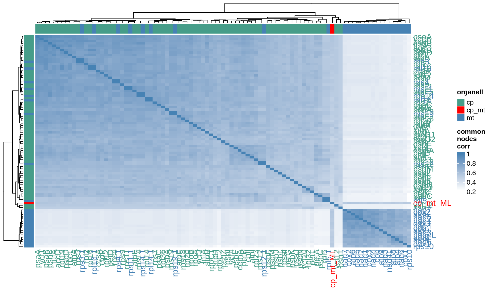
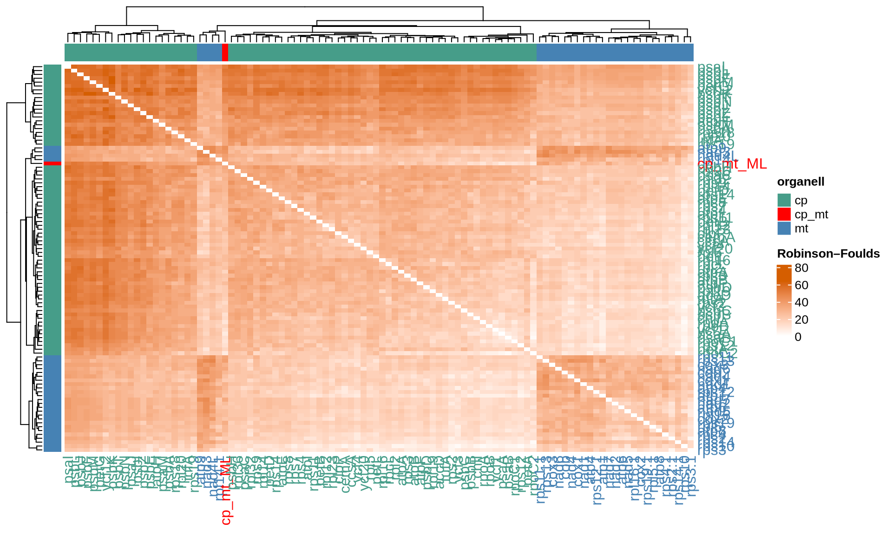
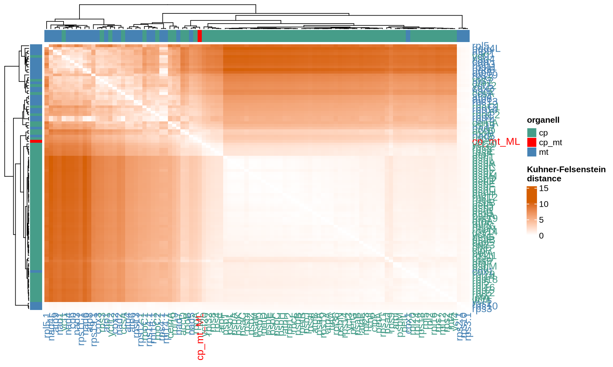
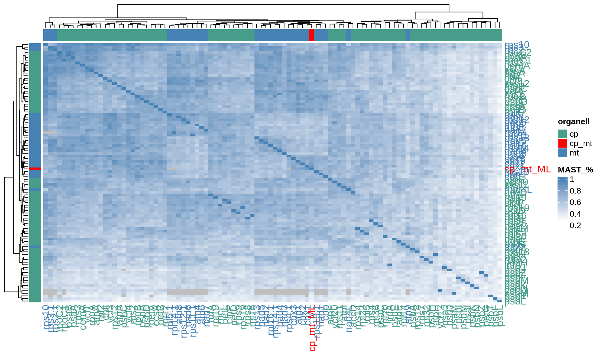

3 Gene markers selection
3.1 On this page
Biological insights and take-home messages are at the bottom of the page at Lesson Learnt: Section 3.4.
- Here we compute the distance between the single-gene ML trees and the reconstructed Ulva species tree;
- we select the top 10 chloroplast and mitochondrial genes which single-gene tree is closer to the Ulva species tree;
- we deploy a combinatorial approach to compute all the possible 2:10 gene combinations and the resulting ML phylogenetic tree;
- finally, we determine the minimum set of genes that can confidently reconstruct the Ulva species tree.
3.2 Organellar gene selection
In order to select the top 10 genes for the combinatorial approach, we first need to calculate the distance metrics between the single-gene ML tree and the reconstructed Ulva species tree. We have decided to constrain the search to the top 10 genes, since the space of gene combinations that are possible increase exponentially the more genes we add to the combinatorial analysis.
3.2.1 Gene distances to species tree
For each of the 99 chloroplast and mitochondrial genes we will calculate the four distance metrics that we have used so far: common nodes correlation, RF distance, KF distance and MAST %.
# get cp ML gene trees
cp_ML_genes = list()
filenames = list.files("./03_cp_singleGene_ML/", pattern = "*.contree", full.names = TRUE)
cp_ML_genes = lapply(filenames, ape::read.tree)
names(cp_ML_genes) = strigr::str_remove_all(filenames, "./03_cp_singleGene_ML//")
names(cp_ML_genes) = strigr::str_remove_all(filenames, ".aln.contree")
cp_ML_genes[["cp_mt_ML"]] = phylogenetic_trees[["cp_mt_ML"]][["tree"]]
# get mt ML gene trees
mt_ML_genes = list()
filenames = list.files("./03_mt_singleGene_ML/", pattern = "*.contree", full.names = TRUE)
mt_ML_genes = lapply(filenames, ape::read.tree)
names(mt_ML_genes) = strigr::str_remove_all(filenames, "./03_mt_singleGene_ML//")
names(mt_ML_genes) = strigr::str_remove_all(filenames, ".aln.contree")
mt_ML_genes[["cp_mt_ML"]] = phylogenetic_trees[["cp_mt_ML"]][["tree"]]
# create distance lists
genes_sets = list("cp_mt_ML" = c(cp_ML_genes, mt_ML_genes[which(names(mt_ML_genes) != "cp_mt_ML")]))
empty_matrix = matrix(nrow = length(genes_sets[["cp_mt_ML"]]), ncol = length(genes_sets[["cp_mt_ML"]]))
colnames(empty_matrix) = names(genes_sets[["cp_mt_ML"]])
rownames(empty_matrix) = names(genes_sets[["cp_mt_ML"]])
cp_mt_genes_distances = list(
"common_nodes_corr" = empty_matrix,
"RF" = empty_matrix,
"KF" = empty_matrix,
"MAST_%" = empty_matrix
)
# populate distances lists
distance_sets = list("cp_mt_genes_distances" = cp_mt_genes_distances)
# get pairwise distances
for(j in 1:length(distance_sets)){
for(i in 1:length(genes_sets[[j]])){
for(k in 1:length(genes_sets[[j]])){
# error handling
# MAST call errors for very unresulved trees (e.g.: psaM)
# Error in root.phylo(x, bipart_x, resolve.root = TRUE) :
# the specified outgroup is not monophyletic
# catch error and move forward
skip_to_next = FALSE
# get tree
tree1_tmp = genes_sets[[j]][[i]]
tree2_tmp = genes_sets[[j]][[k]]
# list of common species
species_list = tree1_tmp$tip.label[which(tree1_tmp$tip.label %in% tree2_tmp$tip.label)]
# get overlapping species
tree1 = ape::keep.tip(tree1_tmp, species_list)
tree2 = ape::keep.tip(tree2_tmp, species_list)
# get distances
distances = phangorn::treedist(tree1, tree2)
distance_sets[[j]][["RF"]][i, k] = distances[[1]]
distance_sets[[j]][["KF"]][i, k] = distances[[2]]
#dist_DB_pairwise[["path_diff"]][i, k] = distances[[3]]
distance_sets[[j]][["MAST_%"]][i, k] = tryCatch(
length(phangorn::mast(tree1, tree2, tree = FALSE)) / length(species_list),
error = function(e) { skip_to_next <<- TRUE }
)
# error handling
if(skip_to_next){distance_sets[[j]][["MAST_%"]][i, k] = NA}
}
}
}
### get pairwise common_nodes_corr distances
# create CPU cluster
cl = parallel::makeCluster(8, type = "SOCK")
registerDoSNOW(cl)
# get chronos in parallel
chronos_list = foreach(k = 1:length(genes_sets[["cp_mt_ML"]]), .combine = "c") %dopar% {
library("ape")
# get tree
tryCatch(chronos(genes_sets[["cp_mt_ML"]][[k]]), error = function(e) { NA })
}
parallel::stopCluster(cl)
names(chronos_list) = names(genes_sets[["cp_mt_ML"]])
# get pairwise common_nodes_corr distances
for(j in 1:length(distance_sets)){
for(i in 1:length(genes_sets[[j]])){
for(k in 1:length(genes_sets[[j]])){
# get trees
tree1_tmp = chronos_list[[names(genes_sets[[j]])[i]]]
tree2_tmp = chronos_list[[names(genes_sets[[j]])[k]]]
# check trees and get distance
if(all(!is.na(tree1_tmp)) & all(!is.na(tree2_tmp))){
distance_sets[[j]][["common_nodes_corr"]][i, k] = cor.dendlist(
dendlist(as.dendrogram(tree1_tmp), as.dendrogram(tree2_tmp)),
method = "common_nodes")[2]
} else {
distance_sets[[j]][["common_nodes_corr"]][i, k] = NA
}
}
}
}
# rename matrices for cp/mt overlapping rpl/rps genes (for plotting reasons)
for(i in 1:length(distance_sets[["cp_mt_genes_distances"]])){
rownames(distance_sets[["cp_mt_genes_distances"]][[i]]) = c(
"accD", "atpA", "atpB", "atpE", "atpF", "atpH", "atpI", "ccsA", "cemA", "chlI", "clpP",
"infA", "petA", "petB", "petD", "petG", "petL", "psaA", "psaB", "psaC", "psaI", "psaJ",
"psaM", "psbA", "psbB", "psbC", "psbD", "psbE", "psbF", "psbH", "psbI", "psbJ", "psbK",
"psbL", "psbM", "psbN", "psbT", "psbZ", "rbcL", "rpl12", "rpl14", "rpl16", "rpl19", "rpl2",
"rpl20", "rpl23", "rpl32", "rpl36", "rpl5", "rpoA", "rpoB", "rpoC1", "rpoC2", "rps11",
"rps12", "rps14", "rps18", "rps19", "rps2", "rps3", "rps4", "rps7", "rps8", "rps9",
"tufA", "ycf1", "ycf12", "ycf20", "ycf3", "ycf4", "cp_mt_ML", "atp1", "atp4", "atp6",
"atp8", "atp9", "cob", "cox1", "cox2", "cox3", "nad1", "nad2", "nad3", "nad4", "nad4L",
"nad5", "nad6", "nad7", "rpl14 ", "rpl16 ", "rpl5 ", "rps10", "rps11 ", "rps12 ", "rps13",
"rps14 ", "rps19 ", "rps2 ", "rps3 ", "rps4 "
)
colnames(distance_sets[["cp_mt_genes_distances"]][[i]]) = c(
"accD", "atpA", "atpB", "atpE", "atpF", "atpH", "atpI", "ccsA", "cemA", "chlI", "clpP",
"infA", "petA", "petB", "petD", "petG", "petL", "psaA", "psaB", "psaC", "psaI", "psaJ",
"psaM", "psbA", "psbB", "psbC", "psbD", "psbE", "psbF", "psbH", "psbI", "psbJ", "psbK",
"psbL", "psbM", "psbN", "psbT", "psbZ", "rbcL", "rpl12", "rpl14", "rpl16", "rpl19", "rpl2",
"rpl20", "rpl23", "rpl32", "rpl36", "rpl5", "rpoA", "rpoB", "rpoC1", "rpoC2", "rps11",
"rps12", "rps14", "rps18", "rps19", "rps2", "rps3", "rps4", "rps7", "rps8", "rps9",
"tufA", "ycf1", "ycf12", "ycf20", "ycf3", "ycf4", "cp_mt_ML", "atp1", "atp4", "atp6",
"atp8", "atp9", "cob", "cox1", "cox2", "cox3", "nad1", "nad2", "nad3", "nad4", "nad4L",
"nad5", "nad6", "nad7", "rpl14 ", "rpl16 ", "rpl5 ", "rps10", "rps11 ", "rps12 ", "rps13",
"rps14 ", "rps19 ", "rps2 ", "rps3 ", "rps4 "
)
}Very well, let’s now plot the generated distances!
# prepare gene lists
cp_genes_list = c(
"accD", "atpA", "atpB", "atpE", "atpF", "atpH", "atpI", "ccsA", "cemA", "chlI", "clpP",
"infA", "petA", "petB", "petD", "petG", "petL", "psaA", "psaB", "psaC", "psaI", "psaJ",
"psaM", "psbA", "psbB", "psbC", "psbD", "psbE", "psbF", "psbH", "psbI", "psbJ", "psbK",
"psbL", "psbM", "psbN", "psbT", "psbZ", "rbcL", "rpl12", "rpl14", "rpl16", "rpl19", "rpl2",
"rpl20", "rpl23", "rpl32", "rpl36", "rpl5", "rpoA", "rpoB", "rpoC1", "rpoC2", "rps11",
"rps12", "rps14", "rps18", "rps19", "rps2", "rps3", "rps4", "rps7", "rps8", "rps9",
"tufA", "ycf1", "ycf12", "ycf20", "ycf3", "ycf4"
)
mt_genes_list = c(
"atp1", "atp4", "atp6", "atp8", "atp9", "cob", "cox1", "cox2", "cox3", "nad1", "nad2",
"nad3", "nad4", "nad4L", "nad5", "nad6", "nad7", "rpl14 ", "rpl16 ", "rpl5 ", "rps10",
"rps11 ", "rps12 ", "rps13", "rps14 ", "rps19 ", "rps2 ", "rps3 ", "rps4 "
)
# remove possible rows/columns with only NAs
tmp_matrix = distance_sets[["cp_mt_genes_distances"]][["common_nodes_corr"]]
tmp_matrix = tmp_matrix[, colSums(is.na(tmp_matrix)) < nrow(tmp_matrix)]
tmp_matrix = tmp_matrix[rowSums(is.na(tmp_matrix)) < ncol(tmp_matrix), ]
# prep annotation
organell = ifelse(rownames(tmp_matrix) %in% cp_genes_list, "cp",
ifelse(rownames(tmp_matrix) %in% mt_genes_list, "mt", "cp_mt")) %>%
as.data.frame()
rownames(organell) = rownames(tmp_matrix)
colnames(organell) = "organell"
organell$color = ifelse(organell$organell == "cp", "#469d89", ifelse(organell$organell == "mt", "steelblue", "red"))
# plot raw distance
ComplexHeatmap::Heatmap(
tmp_matrix,
col = colorRamp2(c(min(tmp_matrix[!is.na(tmp_matrix)]), max(tmp_matrix[!is.na(tmp_matrix)])),
c("white", "steelblue")),
row_names_gp = gpar(col = organell$color),
column_names_gp = gpar(col = organell$color),
top_annotation = HeatmapAnnotation(
organell = as.matrix(organell$organell),
show_annotation_name = FALSE,
show_legend = FALSE,
col = list(organell = c("cp_mt" = "red", "cp" = "#469d89", "mt" = "steelblue"))),
left_annotation = rowAnnotation(
organell = as.matrix(organell$organell),
show_annotation_name = FALSE,
col = list(organell = c("cp_mt" = "red", "cp" = "#469d89", "mt" = "steelblue"))),
name = "common\nnodes\ncorr"
)
# remove possible rows/columns with only NAs
tmp_matrix = distance_sets[["cp_mt_genes_distances"]][["RF"]]
tmp_matrix = tmp_matrix[, colSums(is.na(tmp_matrix)) < nrow(tmp_matrix)]
tmp_matrix = tmp_matrix[rowSums(is.na(tmp_matrix)) < ncol(tmp_matrix), ]
# prep annotation
organell = ifelse(rownames(tmp_matrix) %in% cp_genes_list, "cp",
ifelse(rownames(tmp_matrix) %in% mt_genes_list, "mt", "cp_mt")) %>%
as.data.frame()
rownames(organell) = rownames(tmp_matrix)
colnames(organell) = "organell"
organell$color = ifelse(organell$organell == "cp", "#469d89", ifelse(organell$organell == "mt", "steelblue", "red"))
# plot raw distance
ComplexHeatmap::Heatmap(
tmp_matrix,
col = colorRamp2(c(min(tmp_matrix[!is.na(tmp_matrix)]), max(tmp_matrix[!is.na(tmp_matrix)])),
c("white", "#D55E00")),
row_names_gp = gpar(col = organell$color),
column_names_gp = gpar(col = organell$color),
top_annotation = HeatmapAnnotation(
organell = as.matrix(organell$organell),
show_annotation_name = FALSE,
show_legend = FALSE,
col = list(organell = c("cp_mt" = "red", "cp" = "#469d89", "mt" = "steelblue"))),
left_annotation = rowAnnotation(
organell = as.matrix(organell$organell),
show_annotation_name = FALSE,
col = list(organell = c("cp_mt" = "red", "cp" = "#469d89", "mt" = "steelblue"))),
name = "Robinson–Foulds"
)
# remove possible rows/columns with only NAs
tmp_matrix = distance_sets[["cp_mt_genes_distances"]][["KF"]]
tmp_matrix = tmp_matrix[, colSums(is.na(tmp_matrix)) < nrow(tmp_matrix)]
tmp_matrix = tmp_matrix[rowSums(is.na(tmp_matrix)) < ncol(tmp_matrix), ]
# prep annotation
organell = ifelse(rownames(tmp_matrix) %in% cp_genes_list, "cp",
ifelse(rownames(tmp_matrix) %in% mt_genes_list, "mt", "cp_mt")) %>%
as.data.frame()
rownames(organell) = rownames(tmp_matrix)
colnames(organell) = "organell"
organell$color = ifelse(organell$organell == "cp", "#469d89", ifelse(organell$organell == "mt", "steelblue", "red"))
# plot raw distance
ComplexHeatmap::Heatmap(
tmp_matrix,
col = colorRamp2(c(min(tmp_matrix[!is.na(tmp_matrix)]), max(tmp_matrix[!is.na(tmp_matrix)])),
c("white", "#D55E00")),
row_names_gp = gpar(col = organell$color),
column_names_gp = gpar(col = organell$color),
top_annotation = HeatmapAnnotation(
organell = as.matrix(organell$organell),
show_annotation_name = FALSE,
show_legend = FALSE,
col = list(organell = c("cp_mt" = "red", "cp" = "#469d89", "mt" = "steelblue"))),
left_annotation = rowAnnotation(
organell = as.matrix(organell$organell),
show_annotation_name = FALSE,
col = list(organell = c("cp_mt" = "red", "cp" = "#469d89", "mt" = "steelblue"))),
name = "Kuhner-Felsenstein\ndistance"
)
# remove possible rows/columns with only NAs
tmp_matrix = distance_sets[["cp_mt_genes_distances"]][["MAST_%"]]
tmp_matrix = tmp_matrix[, colSums(is.na(tmp_matrix)) < nrow(tmp_matrix)]
tmp_matrix = tmp_matrix[rowSums(is.na(tmp_matrix)) < ncol(tmp_matrix), ]
# prep annotation
organell = ifelse(rownames(tmp_matrix) %in% cp_genes_list, "cp",
ifelse(rownames(tmp_matrix) %in% mt_genes_list, "mt", "cp_mt")) %>%
as.data.frame()
rownames(organell) = rownames(tmp_matrix)
colnames(organell) = "organell"
organell$color = ifelse(organell$organell == "cp", "#469d89", ifelse(organell$organell == "mt", "steelblue", "red"))
# plot raw distance
ComplexHeatmap::Heatmap(
tmp_matrix,
col = colorRamp2(c(min(tmp_matrix[!is.na(tmp_matrix)]), max(tmp_matrix[!is.na(tmp_matrix)])),
c("white", "steelblue")),
row_names_gp = gpar(col = organell$color),
column_names_gp = gpar(col = organell$color),
top_annotation = HeatmapAnnotation(
organell = as.matrix(organell$organell),
show_annotation_name = FALSE,
show_legend = FALSE,
col = list(organell = c("cp_mt" = "red", "cp" = "#469d89", "mt" = "steelblue"))),
left_annotation = rowAnnotation(
organell = as.matrix(organell$organell),
show_annotation_name = FALSE,
col = list(organell = c("cp_mt" = "red", "cp" = "#469d89", "mt" = "steelblue"))),
name = "MAST_%"
)
The four indices RF, KF, MAST and the correlation between the common nodes metrics pointed out 24 chloroplast genes that provide the most similar topology compared to the Ulva species tree, namely accD, atpF, chlI, petB, psaA, psaB, psbB, psbD, rpl12, rpl19, rpl2, rpl32, rpoA, rpoB, rpoC1, rpoC2, rps12, rps2, rps4, rps8, rps9, tufA, ycf1, and ycf20. Among them, several genes such as psaA, psaB, and psbB are consistently identified by different matrices.
For the mitochondrial, 19 genes provide the most similar topology compared to the Ulva species tree, namely atp1, atp6, cob, cox1, cox2, cox3, nad2, nad4, nad5, nad7, rpl14, rpl16, rps10, rps11, rps14, rps19, rps2, rps3, and rps4.
For each dataset and distance metric, we report below the top 10 single genes most similar to the Ulva species tree that we have reconstructed. The genes are ordered based on the decreasing values of the corresponding index.
3.3 Markers selection
Prior analyses suggested that MAST% and common correlation nodes metrics are the best performers to assess phylogenetic tree distances when the tree do not have the same set of tips, we then selected (arbitrarily) 10 genes for the combinatorial approach, petB, psaA, psaB, psbB, psbD, rps2 from the chloroplast and atp6, cox1, cox2, and rps3 from the mitochondria.
With the combinatorial approach, we can now compute their 2:10 genes combination, concatenate their alignment and reconstruct the corresponding ML tree.
Awesome!
we have generated all possible 2-10 genes combination out of our selection, and we have concatenated the corresponding nucleotidic sequences and we have reconstructed their phylogenetic trees.
The combinatorial approach generated 945 unique combinations of at least a chloroplast and a mitochondrial marker:
- 24 combinations of 2 marker genes;
- 96 combinations of 3 markers;
- 194 combinations of 4 markers;
- 246 combinations of 5 markers;
- 209 combinations of 6 markers;
- 120 combinations of 7 markers;
- 45 combinations of 8 markers;
- 10 combinations of 9 markers;
- finally 1 containing all 10 markers genes
Let’s now see what is the minimum set of chloroplast and mitochondrial marker that approximate the reconstructed Ulva species tree.
First, we import all the generated combinatorial trees.
# declare gene lists
cp_genes = c("petB", "psaA", "psaB", "psbB", "psbD", "rps2")
mt_genes = c("atp6", "cox1", "cox2", "rps3")
# import ref species tree
cp_mt_ML_dendro = ape::read.tree(file = "06_cp_mt_concat_ML/cp_mt_allgenes_concat.contree")
# create empty list of trees
combinatorial_trees = list(
"cp_mt_conc_2_genes" = list("cp_mt_ML" = cp_mt_ML_dendro),
"cp_mt_conc_3_genes" = list("cp_mt_ML" = cp_mt_ML_dendro),
"cp_mt_conc_4_genes" = list("cp_mt_ML" = cp_mt_ML_dendro),
"cp_mt_conc_5_genes" = list("cp_mt_ML" = cp_mt_ML_dendro),
"cp_mt_conc_6_genes" = list("cp_mt_ML" = cp_mt_ML_dendro),
"cp_mt_conc_7_genes" = list("cp_mt_ML" = cp_mt_ML_dendro),
"cp_mt_conc_8_genes" = list("cp_mt_ML" = cp_mt_ML_dendro),
"cp_mt_conc_9_genes" = list("cp_mt_ML" = cp_mt_ML_dendro),
"cp_mt_conc_10_genes" = list("cp_mt_ML" = cp_mt_ML_dendro)
)
# populate combinatorial trees
for(k in 2:10){
# get file list
tree_list_all = list.files(path = paste(mainDir, "/09_combinatorial_phylogeny/01_cp_mt_combinatorial/cp_mt_conc_", k, "_genes", sep = ""),
pattern = "\\.contree$")
# keep only trees with both cp and mt markers
tree_list_fltr = c()
for(tree in tree_list_all){
cp = FALSE
mt = FALSE
# check if cp is present
for(gene in cp_genes){
if(grepl(gene, tree, fixed = TRUE)){
cp = TRUE
}
}
# check if mt is present
for(gene in mt_genes){
if(grepl(gene, tree, fixed = TRUE)){
mt = TRUE
}
}
if(cp == TRUE & mt == TRUE){
tree_list_fltr = c(tree_list_fltr, tree)
}
}
# import trees
for(tree in tree_list_fltr){
combinatorial_trees[[paste("cp_mt_conc_", k, "_genes", sep = "")]][[length(combinatorial_trees[[paste("cp_mt_conc_", k, "_genes", sep = "")]]) + 1]] = ape::read.tree(file = paste(mainDir, "/09_combinatorial_phylogeny/01_cp_mt_combinatorial/cp_mt_conc_", k, "_genes/", tree, sep = ""))
names(combinatorial_trees[[paste("cp_mt_conc_", k, "_genes", sep = "")]])[[length(combinatorial_trees[[paste("cp_mt_conc_", k, "_genes", sep = "")]])]] = stringr::str_remove(tree, ".aln.contree")
}
# clean
rm(cp, gene, k, mt, tree, tree_list_all, tree_list_fltr)
}Next step: we calculate the distances between the combinatorial trees and the reconstructed Ulva species tree.
# create distance lists
combinatorial_distances = list(
"cp_mt_conc_2_genes" = NULL,
"cp_mt_conc_3_genes" = NULL,
"cp_mt_conc_4_genes" = NULL,
"cp_mt_conc_5_genes" = NULL,
"cp_mt_conc_6_genes" = NULL,
"cp_mt_conc_7_genes" = NULL,
"cp_mt_conc_8_genes" = NULL,
"cp_mt_conc_9_genes" = NULL,
"cp_mt_conc_10_genes" = NULL
)
# populate distance lists
combinatorial_list = c(25, 97, 195, 247, 210, 121, 46, 11, 2)
for(k in 1:length(combinatorial_distances)){
# get size of the results matrix
empty_matrix = matrix(nrow = combinatorial_list[[k]], ncol = combinatorial_list[[k]])
colnames(empty_matrix) = names(combinatorial_trees[[k]])
rownames(empty_matrix) = names(combinatorial_trees[[k]])
# populate
combinatorial_distances[[k]] = list(
"common_nodes_corr" = empty_matrix,
"RF" = empty_matrix,
"KF" = empty_matrix,
"MAST_%" = empty_matrix
)
# clean
rm(empty_matrix)
}
# get pairwise distances
for(j in 1:length(combinatorial_trees)){
for(i in 1:length(combinatorial_trees[[j]])){
for(k in 1:length(combinatorial_trees[[j]])){
# get tree
tree1_tmp = combinatorial_trees[[j]][[i]]
tree2_tmp = combinatorial_trees[[j]][[k]]
# list of common species
species_list = tree1_tmp$tip.label[which(tree1_tmp$tip.label %in% tree2_tmp$tip.label)]
# get overlapping species
tree1 = ape::keep.tip(tree1_tmp, species_list)
tree2 = ape::keep.tip(tree2_tmp, species_list)
# get distances
distances = phangorn::treedist(tree1, tree2)
combinatorial_distances[[j]][["RF"]][i, k] = distances[[1]]
combinatorial_distances[[j]][["KF"]][i, k] = distances[[2]]
combinatorial_distances[[j]][["MAST_%"]][i, k] = length(phangorn::mast(tree1, tree2, tree = FALSE)) / length(species_list)
# clean
rm(tree1, tree2, tree1_tmp, tree2_tmp, distances)
}
}
}
### get pairwise common_nodes_corr distances
# iterate all combinatorial trees
for(j in 1:length(combinatorial_trees)){
# create CPU cluster
cl = parallel::makeCluster(8, type = "SOCK")
doSNOW::registerDoSNOW(cl)
# get chronos in parallel
chronos_list = foreach(k = 1:length(combinatorial_trees[[j]]), .combine = "c") %dopar% {
library("ape")
# get tree
tryCatch(chronos(combinatorial_trees[[j]][[k]]), error = function(e) { NA })
}
parallel::stopCluster(cl)
names(chronos_list) = names(combinatorial_trees[[j]])
# get pairwise common_nodes_corr distances
for(i in 1:length(combinatorial_trees[[j]])){
for(k in 1:length(combinatorial_trees[[j]])){
print(paste(j, i, k, sep = ","))
# get trees
tree1_tmp = chronos_list[[names(combinatorial_trees[[j]])[i]]]
tree2_tmp = chronos_list[[names(combinatorial_trees[[j]])[k]]]
# check trees and get distance
if(all(!is.na(tree1_tmp)) & all(!is.na(tree2_tmp))){
combinatorial_distances[[j]][["common_nodes_corr"]][i, k] = tryCatch(
cor.dendlist(dendlist(as.dendrogram(ape::root(tree1_tmp, outgroup = c("Oviri", "Pakin"), resolve.root = TRUE)),
as.dendrogram(ape::root(tree2_tmp, outgroup = c("Oviri", "Pakin"), resolve.root = TRUE))),
method = "common_nodes")[2],
error = function(e) { NA })
} else {
combinatorial_distances[[j]][["common_nodes_corr"]][i, k] = NA
}
}
}
}For each combination (i.e.: 2-genes combination, 3-genes combination, etc.), a representative combination with the highest the MAST% and the common node correlation are shown in the table below. The best combination to use for the development of Ulva organellar universal markers should be the combination with the highest values of the two indices and the lowest number of markers in the combination.
The combination with five to eight markers have the highest value for the MAST% and the highest value for the common node correlation, but given the number of markers, it might pose more challenges for the development process later. The combination with four markers, psbD, psaA, cox1, cox2, which also has the highest value for the MAST% and has the value for the common node correlation slightly lower than the highest value possible, however, we believe that approximates faithfully the reconstructed Ulva species tree and can be used to develop universal primers for easy and cost-efficient Ulva species classification of field and herbarium specimens.
3.4 Lessons Learnt
So far, we have learnt:
- chloroplast genes petB, psaA, psaB, psbB, psbD, rps2 and mitochondrial genes atp6, cox1, cox2, and rps3 are among the ones with the single-gene ML tree closest to the reconstructed Ulva species tree;
- interestingly, commonly used markers (i.e.: rbcL and tufA) had a single-gene ML tree more distant to the reconstructed Ulva species tree than the other markers we have selected;
- out of the 945 2:10 gene combinations that we have tested, the 4-genes combination psbD-psaA-cox1-cox2 provides a ML phylogenetic tree that faithfully approximate the reconstructed Ulva species tree and could be used for the development of universal Ulva species markers.
3.5 Session Information
R version 4.3.2 (2023-10-31)
Platform: x86_64-conda-linux-gnu (64-bit)
Running under: openSUSE Tumbleweed
Matrix products: default
BLAS/LAPACK: /home/andrea/miniforge3/envs/moai/lib/libmkl_rt.so.2; LAPACK version 3.9.0
locale:
[1] LC_CTYPE=en_US.UTF-8 LC_NUMERIC=C
[3] LC_TIME=it_IT.UTF-8 LC_COLLATE=en_US.UTF-8
[5] LC_MONETARY=en_US.UTF-8 LC_MESSAGES=en_US.UTF-8
[7] LC_PAPER=en_US.UTF-8 LC_NAME=C
[9] LC_ADDRESS=C LC_TELEPHONE=C
[11] LC_MEASUREMENT=en_US.UTF-8 LC_IDENTIFICATION=C
time zone: Europe/Brussels
tzcode source: system (glibc)
attached base packages:
[1] parallel stats4 grid stats graphics grDevices utils
[8] datasets methods base
other attached packages:
[1] treeio_1.26.0 TreeDist_2.9.2 stringr_1.5.1
[4] scales_1.3.0 RColorBrewer_1.1-3 reshape_0.8.9
[7] phytools_2.4-4 maps_3.4.2.1 phylogram_2.1.0
[10] phangorn_2.12.1 gridExtra_2.3 ggtree_3.10.1
[13] ggplot2_3.5.1 ggdist_3.3.2 doSNOW_1.0.20
[16] snow_0.4-4 iterators_1.0.14 foreach_1.5.2
[19] dendextend_1.19.0 DECIPHER_2.30.0 RSQLite_2.3.9
[22] Biostrings_2.70.3 GenomeInfoDb_1.38.8 XVector_0.42.0
[25] IRanges_2.36.0 S4Vectors_0.40.2 BiocGenerics_0.48.1
[28] corrplot_0.95 ComplexHeatmap_2.18.0 circlize_0.4.16
[31] ape_5.8-1
loaded via a namespace (and not attached):
[1] jsonlite_1.8.9 shape_1.4.6.1 magrittr_2.0.3
[4] magick_2.8.5 farver_2.1.2 rmarkdown_2.29
[7] GlobalOptions_0.1.2 fs_1.6.5 zlibbioc_1.48.2
[10] vctrs_0.6.5 memoise_2.0.1 RCurl_1.98-1.16
[13] htmltools_0.5.8.1 distributional_0.5.0 DEoptim_2.2-8
[16] gridGraphics_0.5-1 sass_0.4.9 bslib_0.8.0
[19] htmlwidgets_1.6.4 plyr_1.8.9 cachem_1.1.0
[22] igraph_2.1.4 mime_0.12 lifecycle_1.0.4
[25] pkgconfig_2.0.3 Matrix_1.6-5 R6_2.5.1
[28] fastmap_1.2.0 GenomeInfoDbData_1.2.11 rbibutils_2.3
[31] shiny_1.10.0 clue_0.3-66 digest_0.6.37
[34] numDeriv_2016.8-1.1 aplot_0.2.4 colorspace_2.1-1
[37] patchwork_1.3.0 crosstalk_1.2.1 clusterGeneration_1.3.8
[40] compiler_4.3.2 bit64_4.6.0-1 withr_3.0.2
[43] doParallel_1.0.17 optimParallel_1.0-2 viridis_0.6.5
[46] DBI_1.2.3 R.utils_2.12.3 MASS_7.3-60.0.1
[49] rjson_0.2.23 scatterplot3d_0.3-44 tools_4.3.2
[52] httpuv_1.6.15 TreeTools_1.13.0 R.oo_1.27.0
[55] glue_1.8.0 quadprog_1.5-8 nlme_3.1-167
[58] R.cache_0.16.0 promises_1.3.2 cluster_2.1.8
[61] PlotTools_0.3.1 generics_0.1.3 gtable_0.3.6
[64] R.methodsS3_1.8.2 tidyr_1.3.1 pillar_1.10.1
[67] yulab.utils_0.2.0 later_1.4.1 dplyr_1.1.4
[70] lattice_0.22-6 bit_4.5.0.1 tidyselect_1.2.1
[73] knitr_1.49 xfun_0.50 expm_1.0-0
[76] matrixStats_1.5.0 DT_0.33 stringi_1.8.4
[79] lazyeval_0.2.2 ggfun_0.1.8 yaml_2.3.10
[82] evaluate_1.0.3 codetools_0.2-20 tibble_3.2.1
[85] ggplotify_0.1.2 cli_3.6.3 xtable_1.8-4
[88] Rdpack_2.6.2 jquerylib_0.1.4 munsell_0.5.1
[91] Rcpp_1.0.14 coda_0.19-4.1 png_0.1-8
[94] blob_1.2.4 bitops_1.0-9 viridisLite_0.4.2
[97] tidytree_0.4.6 purrr_1.0.2 crayon_1.5.3
[100] combinat_0.0-8 GetoptLong_1.0.5 rlang_1.1.5
[103] fastmatch_1.1-6 mnormt_2.1.1 shinyjs_2.1.0